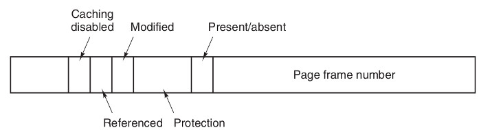

Operating Systems
Paging
Ahmad Yoosofan
University of Kashan
شکل سادهٔ صفحهبندی

- Number of bits of Addrress related to Maximum supported memory by this computer(cpu and motherboard)
- Number of bits of Addrress = log2(Maximum supported memory)
- If max supported memory = 32 words then number of bits needed for addrress ?
- 32 = 2 ^ 5, \(n = log_2(m)\) , m is number of bytes or words
- 5 = log2(32)
- if p = 2, d = 3 then the size of each frame or page is ?
- 2 ^ 3 = 8
- Maximum number of Frames?
- 2 ^ 2 = 4
بخشبندی ثبات آدرس در حافظهٔ صفحهبندی شده

- Frame 4k then number_bits(d) == 12
- Frame 1k then number_bits(d) == 10
- Frame 16k then number_bits(d) == 14
Maximux memory supported by cpu
- 1 MB ==> number_of_bit(Address register) == 20
- Frame 4k ==> d == 12 and p == 8
- Frame 1k ==> d == 10 and p == 10 // wrong?
Consider a computer with maximum 16 words
- Draw Memory Bytes
- d = 2
- Draw Memory Frames
- some First Frames for os
- Put a process into Memory (not continuous or in order)
- Fill page table
- Convert a Logical Addfress to Physical Address
- Put another process into Memory
0000 | 0001 | 0010 | 0011 | 0100 | 0101 | 0110 | 0111 | 1000 | 1001 | 1010 | 1011 | 1100 | 1101 | 1110 | 1111 |
|---|---|---|---|---|---|---|---|---|---|---|---|---|---|---|---|
0 | 1 | 2 | 3 | 4 | 5 | 6 | 7 | 8 | 9 | 10 | 11 | 12 | 13 | 14 | 15 |
.
00 | 01 | 10 | 11 |
|---|---|---|---|
0 | 1 | 2 | 3 |
00
00 | 01 | 10 | 11 |
|---|---|---|---|
4 | 5 | 6 | 7 |
01
00 | 01 | 10 | 11 |
|---|---|---|---|
8 | 9 | 10 | 11 |
10
00 | 01 | 10 | 11 |
|---|---|---|---|
12 | 13 | 14 | 15 |
11
یک کامپیوتر با حافظهٔ ۳۲ بایت و اندازههای قاب ۸ بایتی و یک فرآیند
d = 3, p = 2
p0 11 bytes
---
یک کامپیوتر با حافظهٔ ۱۲۸ بایتی و صفحههای ۸ بایتی
---
یک حافظهٔ ۳۲ بایتی با صفحههای ۴ بایتی

تغییرات فضاهای آزاد پیش و پس از تخصیص حافظه به یک فرآیند

تغییرات حافظه برای چند فرآیند

تبدیل آدرس منطقی به آدرس فیزیکی در حافظهٔ صفحهبندی شده


Address Translation
Process and Page Table

PTBR
TLB
Flowchart of TLB miss
Paging Memory Access

اشتراک گذاری در حافظهٔ صفحهبندی شده

سلسه مراتب حافظه

Memory Access

Effective Access Time
- \(t_t\) (access Time of TLB) : زمان دسترسی به حافظهی نهان جدول صفحه
- \(t_c\) (access Time of Cache): زمان دسترسی به حافظهی نهان
- \(t_m\) (access Time of Memory): زمان دسترسی به حافظهی اصلی
- \(h_t\) (Hit ratio of TLB): ضریب اصابت به حافظهی نهان جدول صفحه
- \(h_c\) (Hit ratio of Cache): ضریب اصابت به حافظهی نهان
زمان دسترسی مؤثر را برای پردازندهای با حافظهٔ صفحهبندی شده حساب کنید اگر زمان دسترسی به حافظهٔ نهان جدول صفحه برابر ۱ نانو ثانیه باشد و زمان دسترسی به حافظهٔ نهان ۵ نانوثانیه باشد و زمان دسترسی به حافظه برابر ۱۰۰ نانوثانیه باشد و ضریب اصابت حافظهٔ نهان جدول صفحه برابر با ۹۵ درصد و ضریب اصابت به حافظهٔ نهان ۹۰ درصد باشد.
- \(t_t\) = 1, \(t_c\) = 5, \(t_m\) = 100, \(h_t\) = 0.95, \(h_c\) = 0.90
زمان دسترسی مؤثر = زمان دسترسی به جدول صفحه + زمان دسترسی به حافظه
با فرض برابر بودن نسبتهای اصابت و زمانهای یکسان برای دسترسی به حافظهٔ نهان و حافظهٔ TLB خواهیم داشت
حفاظت از حافظهٔ صفحهبندی شده

References(I)
- http://os-book.com
- https://en.wikipedia.org/wiki/Paging
- Sean K. Barker (https://tildesites.bowdoin.edu/~sbarker/)
- https://en.wikipedia.org/wiki/Page_(computer_memory)
- http://blog.cs.miami.edu/burt/2012/10/31/virtual-memory-pages-and-page-frames/
- https://www.tldp.org/LDP/tlk/mm/memory.html
- https://www.geeksforgeeks.org/operating-system-paging/
- https://samypesse.gitbooks.io/how-to-create-an-operating-system/Chapter-8/
- https://www.cse.iitb.ac.in/~mythili/teaching/cs347_autumn2016/notes/07-memory.pdf
- https://www.kernel.org/doc/html/latest/admin-guide/mm/index.html
- https://web.fe.up.pt/~arestivo/presentation/os-memory/#15
- https://github.com/mor1/ia-operating-systems
- https://slideplayer.com/slide/7084682/
References(II)
- http://images.bit-tech.net/content_images/2007/11/the_secrets_of_pc_memory_part_1/hei.png
- https://upload.wikimedia.org/wikipedia/commons/c/c2/Write-back_with_write-allocation.svg
- https://www.byclb.com/TR/Tutorials/dsp_advanced/ch1_1_dosyalar/image025.jpg
- https://en.wikipedia.org/wiki/File:Cache,hierarchy-example.svg
- https://tutorialspoint.dev/image/Translation.png
- https://www.cs.princeton.edu/courses/archive/spr11/cos217/lectures/18MemoryMgmt.pdf
- http://harmanani.github.io/classes/csc320/Notes/ch05.pdf
- https://www.cs.princeton.edu/courses/archive/spr11/cos217/lectures/18MemoryMgmt.pdf
{kind=link}
{kind=link}
{kind=link}
{kind=link}
{kind=link}
References(III)
- https://www.kernel.org/doc/
- https://www.gatevidyalay.com/wp-content/uploads/2018/11/Translating-Logical-Address-into-Physical-Address-Diagram-Paging-using-TLB-1.png
- https://www.gatevidyalay.com/translation-lookaside-buffer-tlb-paging/
- https://www.gatevidyalay.com/wp-content/uploads/2018/11/Translating-Logical-Address-into-Physical-Address-Diagram-Paging-using-TLB-1.png
{kind=link}